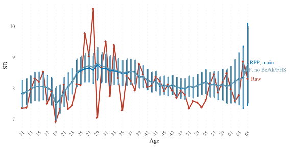
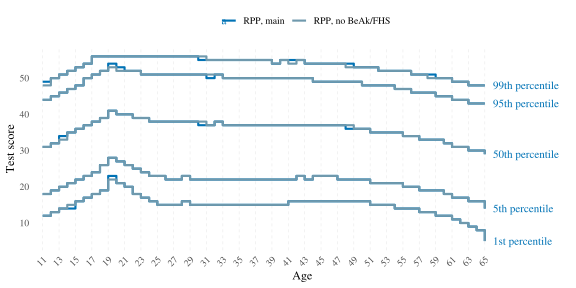
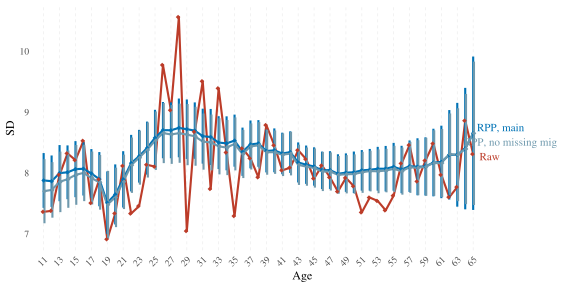

Additional analyses
2025-11-14
knitr::opts_chunk$set(
message = FALSE,
warning = TRUE,
include = TRUE,
error = TRUE,
fig.width = 8,
fig.height = 4
)
library(tidyverse)
library(haven)
library(ggrepel)
library(brms)
library(tidybayes)
library(rstan)
options(mc.cores = 4,
brms.backend = "cmdstanr",
scipen = 999,
digits = 4,
width = 120)
# windowsFonts(Times = windowsFont("Times New Roman"))
theme_set(theme_minimal(base_size = 12, base_family = "Times"))
load("../unshareable_data/preprocessed/tl.Rda")
load("data/preprocessed/de_census/census.Rda")
source("age_norm_comparisons.R")1 Model predictions without poststratification
Most continuous norming methods do not involve any weighting – relying only on the regression model to potentially estimates improve. The figures below show how our norming results would look without poststratifiying the regularised model’s prediction. Regularisation led to smoother and more precise mean estimates in each age group as compared to raw means even before poststratification. However, the regularised prediction model’s main function in RPP is facilitating poststratification’s work (i.e., the part that corrects for nonrepresentativeness). It is poststratification that causes estimates to actually differ on average from their raw counterparts. In our case, the model recognised the positive effect of education on CFT 20-R scores, and the poststratification corrected for the sample’s overrepresentation of more highly educated individuals as compared to the population. This underlies the difference between RP and RPP.
1.1 Fit/load the prediction model
brm_beta_ints_no_educ_male <-
brm(bf(
cft ~ (1 | mig) + male + (1 | mig:male) + (1 | mig:educ) + s(age, by = educ),
sigma ~ (1 | mig) + (1 | educ) + male + s(age)
),
chains = 4,
seed = 810,
file = "../unshareable_data/brms/cft/brm_beta_ints_no_educ_male",
data = tl) %>%
add_criterion("loo")1.2 Compare
RPP_vs_raw_vs_RP <- age_norm_comparisons(
brm_beta_ints_no_educ_male,
RP = c("census", "norming_sample"),
prediction_transform = list(
function(x) round(x*56) # for handling proportion predictons
),
labels = c( "Raw", "RPP", "RP"),
palette = c(
"#BC3C29FF",
"#0072B5FF",
"#E18727FF"
),
output_file = "data/results/RPP_vs_raw_vs_RP.rds"
)
RPP_vs_raw_vs_RP[-1]## $overall_estimates
## # A tibble: 3 × 5
## Mean SE_of_Mean SD SE_of_SD Model
## <dbl> <dbl> <dbl> <dbl> <chr>
## 1 37.4 NA 8.19 NA Raw
## 2 35.7 0.116 8.59 0.0952 RPP_brm_beta_ints_no_educ_male
## 3 37.3 0.0736 8.21 0.0565 RP_brm_beta_ints_no_educ_male
##
## $means_plot
##
## $SDs_plot## Warning: Removed 55 rows containing missing values or values outside the scale range (`geom_segment()`).
##
## $SEs_plot
##
## $percentile_plot
Besides the effect that poststratification has on means, it also smoothes SD estimates and considerably reduces SEs of both means and SDs.
2 One person per family
Since the TwinLife sample is composed of families, one could argue that the dependence among estimates of family members violates the i.i.d assumption and leads to underestimation of variance. To check the robustness of our results against this violation, we ran the same RPP but with only one person chosen randomly out of each family, thus eliminating the dependency.
2.1 Fit/load the prediction model
set.seed(14)
tl_1_per_fid <- tl %>%
group_by(fid) %>%
sample_n(1)
brm_beta_ints_no_educ_male_1_per_fid <-
brm(bf(
cft_prop ~ (1 | mig) + male + (1 | mig:male) + (1 | mig:educ) + s(age, by = educ),
phi ~ (1 | mig) + (1 | educ) + male + s(age) # Model precision parameter
),
family = Beta(), # Beta family for proportion data
chains = 4,
seed = 810,
file = "../unshareable_data/brms/cft/brm_beta_ints_no_educ_male_1_per_fid",
data = tl_1_per_fid) %>%
add_criterion("loo")
brm_beta_ints_no_educ_male_1_per_fid## Warning: There were 32 divergent transitions after warmup. Increasing adapt_delta above 0.8 may help. See
## http://mc-stan.org/misc/warnings.html#divergent-transitions-after-warmup## Family: beta
## Links: mu = logit; phi = log
## Formula: cft_prop ~ (1 | mig) + male + (1 | mig:male) + (1 | mig:educ) + s(age, by = educ)
## phi ~ (1 | mig) + (1 | educ) + male + s(age)
## Data: tl_1_per_fid (Number of observations: 4046)
## Draws: 4 chains, each with iter = 2000; warmup = 1000; thin = 1;
## total post-warmup draws = 4000
##
## Smoothing Spline Hyperparameters:
## Estimate Est.Error l-95% CI u-95% CI Rhat Bulk_ESS Tail_ESS
## sds(sageeducISCED3b:Uppersecondaryvocational_1) 1.25 0.74 0.27 3.05 1.01 897 1864
## sds(sageeducISCED1:Primary_1) 7.57 2.85 3.52 14.43 1.00 1930 2453
## sds(sageeducISCED2:Lowersecondary_1) 3.34 1.42 1.34 6.71 1.00 1189 1814
## sds(sageeducISCED3a:Uppersecondarygeneral_1) 1.92 1.39 0.10 5.11 1.01 688 1288
## sds(sageeducISCED4:PostMsecondary_1) 1.76 1.08 0.30 4.31 1.00 870 1467
## sds(sageeducISCED5a:Tertiarye.g.college_1) 2.28 1.06 0.64 4.78 1.00 687 822
## sds(sageeducISCED5b:Tertiarye.g.coMopprogram_1) 0.77 0.45 0.22 1.90 1.00 2326 2806
## sds(sageeducISCED6:PhD_1) 2.01 1.09 0.68 4.72 1.00 1771 2427
## sds(sageeducST1:Primary_1) 3.15 3.13 0.12 11.77 1.00 2103 1978
## sds(sageeducST2:Lowersecondary_1) 1.76 1.72 0.06 5.96 1.00 1922 1775
## sds(sageeducST3:Intermediatesecondary_1) 3.39 2.14 0.94 8.92 1.00 1892 1598
## sds(sageeducST4:Uppersecondary_1) 3.06 1.48 1.20 6.95 1.00 2741 2390
## sds(sageeducST5:Comprehensiveschool_1) 3.52 2.01 1.18 8.90 1.00 2387 2338
## sds(sageeducST6:Otherschool_1) 3.25 1.85 1.10 8.31 1.00 2400 1858
## sds(sageeducST7:Nolongeratschool_1) 2.35 2.25 0.07 8.15 1.00 1489 958
## sds(phi_sage_1) 0.37 0.44 0.01 1.58 1.00 1112 1719
##
## Multilevel Hyperparameters:
## ~mig (Number of levels: 6)
## Estimate Est.Error l-95% CI u-95% CI Rhat Bulk_ESS Tail_ESS
## sd(Intercept) 0.19 0.11 0.07 0.46 1.00 1399 1851
## sd(phi_Intercept) 0.13 0.09 0.02 0.34 1.00 1356 1251
##
## ~mig:educ (Number of levels: 86)
## Estimate Est.Error l-95% CI u-95% CI Rhat Bulk_ESS Tail_ESS
## sd(Intercept) 0.09 0.03 0.04 0.16 1.00 638 1033
##
## ~mig:male (Number of levels: 12)
## Estimate Est.Error l-95% CI u-95% CI Rhat Bulk_ESS Tail_ESS
## sd(Intercept) 0.03 0.03 0.00 0.13 1.01 1211 1311
##
## ~educ (Number of levels: 15)
## Estimate Est.Error l-95% CI u-95% CI Rhat Bulk_ESS Tail_ESS
## sd(phi_Intercept) 0.17 0.06 0.09 0.30 1.00 1361 2366
##
## Regression Coefficients:
## Estimate Est.Error l-95% CI u-95% CI Rhat Bulk_ESS Tail_ESS
## Intercept 0.55 0.11 0.32 0.77 1.00 928 1726
## phi_Intercept 2.55 0.09 2.36 2.74 1.00 1775 1598
## maleTRUE 0.14 0.04 0.07 0.22 1.00 2054 1197
## phi_maleTRUE -0.05 0.05 -0.14 0.03 1.00 6699 2920
## sage:educISCED3b:Uppersecondaryvocational_1 -5.27 3.14 -13.01 -0.78 1.00 867 1496
## sage:educISCED1:Primary_1 -23.34 14.90 -56.24 2.82 1.00 1864 2546
## sage:educISCED2:Lowersecondary_1 -12.17 6.35 -27.26 -1.87 1.00 1265 1530
## sage:educISCED3a:Uppersecondarygeneral_1 2.06 4.38 -4.07 13.06 1.00 990 1402
## sage:educISCED4:PostMsecondary_1 1.45 3.88 -4.59 11.01 1.00 1273 1678
## sage:educISCED5a:Tertiarye.g.college_1 5.84 4.03 -1.19 14.59 1.00 771 959
## sage:educISCED5b:Tertiarye.g.coMopprogram_1 -1.54 1.82 -5.74 1.75 1.01 1572 1701
## sage:educISCED6:PhD_1 1.83 4.43 -7.32 11.08 1.00 2191 1791
## sage:educST1:Primary_1 2.74 9.95 -15.95 27.43 1.00 1676 1031
## sage:educST2:Lowersecondary_1 3.12 5.80 -8.94 14.88 1.00 2162 1705
## sage:educST3:Intermediatesecondary_1 3.91 9.19 -14.11 24.57 1.00 1696 1220
## sage:educST4:Uppersecondary_1 1.58 7.82 -14.20 17.53 1.01 1947 1851
## sage:educST5:Comprehensiveschool_1 1.53 9.99 -20.61 21.52 1.01 1786 1536
## sage:educST6:Otherschool_1 2.51 9.02 -16.26 20.63 1.00 1839 1703
## sage:educST7:Nolongeratschool_1 1.27 8.46 -15.57 19.50 1.00 1211 675
## phi_sage_1 -0.15 0.91 -2.33 1.21 1.00 1873 1761
##
## Draws were sampled using sample(hmc). For each parameter, Bulk_ESS
## and Tail_ESS are effective sample size measures, and Rhat is the potential
## scale reduction factor on split chains (at convergence, Rhat = 1).2.2 Compare
main_vs_1_per_fam <- age_norm_comparisons(
brm_beta_ints_no_educ_male, brm_beta_ints_no_educ_male_1_per_fid,
prediction_transform = list(
function(x) round(x*56), # for handling proportion predictons
function(x) round(x*56) # for handling proportion predictions
),
labels = c( "Raw", "RPP, full sample", "RPP, 1/fam"),
palette = c(
"#BC3C29FF",
"#0072B5FF",
"#6F99ADFF"
),
output_file = "data/results/main_vs_1_per_fam.rds"
)
ggsave( "figures/S09_main_vs_1_per_fam.jpeg", main_vs_1_per_fam$means_plot, width = 8, height = 4)
ggsave( "figures/S09_main_vs_1_per_fam_percentile.jpeg", main_vs_1_per_fam$percentile_plot, width = 8, height = 4)
main_vs_1_per_fam[-1]## $overall_estimates
## # A tibble: 3 × 5
## Mean SE_of_Mean SD SE_of_SD Model
## <dbl> <dbl> <dbl> <dbl> <chr>
## 1 37.4 NA 8.19 NA Raw
## 2 35.7 0.115 8.60 0.0942 RPP_brm_beta_ints_no_educ_male
## 3 35.7 0.168 8.68 0.146 RPP_brm_beta_ints_no_educ_male_1_per_fid
##
## $means_plot
##
## $SDs_plot## Warning: Removed 55 rows containing missing values or values outside the scale range (`geom_segment()`).
##
## $SEs_plot
##
## $percentile_plot3 Excluding participants with ambivalent educational attainment category
Some participants were assigned an education category that combines two degrees with variable ISCED levels: “university of applied sciences, university of cooperative education”. While a degree from a university of applied sciences (Fachhochschule) would put one in ISCED level 5a, a degree from a university of cooperative education (Berufsakademie) is equivalent to ISCED level 5b. TwinLife assigns all people who have this ambivalent category to ISCED 5a. Here we test the robustness of our results against excluding those 357 participants.
3.1 Fit/load the prediction model
tl_no_berufsakad_with_fachhochschule <- tl %>%
filter(!(eca0108 == "level 5a" & eca0230 == 8))
brm_beta_ints_no_educ_male_no_berufsakad_with_fachhochschule <-
brm(bf(
cft_prop ~ (1 | mig) + male + (1 | mig:male) + (1 | mig:educ) + s(age, by = educ),
phi ~ (1 | mig) + (1 | educ) + male + s(age) # Model precision parameter
),
family = Beta(), # Beta family for proportion data
chains = 4,
seed = 810,
file = "../unshareable_data/brms/cft/brm_beta_ints_no_educ_male_no_berufsakad_with_fachhochschule",
data = tl_no_berufsakad_with_fachhochschule) %>%
add_criterion("loo")
brm_beta_ints_no_educ_male_no_berufsakad_with_fachhochschule## Warning: There were 36 divergent transitions after warmup. Increasing adapt_delta above 0.8 may help. See
## http://mc-stan.org/misc/warnings.html#divergent-transitions-after-warmup## Family: beta
## Links: mu = logit; phi = log
## Formula: cft_prop ~ (1 | mig) + male + (1 | mig:male) + (1 | mig:educ) + s(age, by = educ)
## phi ~ (1 | mig) + (1 | educ) + male + s(age)
## Data: tl_no_berufsakad_with_fachhochschule (Number of observations: 9630)
## Draws: 4 chains, each with iter = 2000; warmup = 1000; thin = 1;
## total post-warmup draws = 4000
##
## Smoothing Spline Hyperparameters:
## Estimate Est.Error l-95% CI u-95% CI Rhat Bulk_ESS Tail_ESS
## sds(sageeducISCED3b:Uppersecondaryvocational_1) 1.41 0.69 0.45 3.06 1.00 1082 1983
## sds(sageeducISCED1:Primary_1) 6.02 2.03 3.02 10.85 1.00 1815 2388
## sds(sageeducISCED2:Lowersecondary_1) 3.33 1.44 1.41 6.77 1.01 1124 1950
## sds(sageeducISCED3a:Uppersecondarygeneral_1) 2.46 1.22 0.63 5.52 1.00 1337 1583
## sds(sageeducISCED4:PostMsecondary_1) 1.18 0.65 0.33 2.75 1.00 1518 2434
## sds(sageeducISCED5a:Tertiarye.g.college_1) 2.64 0.92 1.25 4.82 1.00 1850 2300
## sds(sageeducISCED5b:Tertiarye.g.coMopprogram_1) 0.87 0.49 0.29 2.18 1.00 1939 2776
## sds(sageeducISCED6:PhD_1) 2.08 1.05 0.82 4.67 1.00 2337 2907
## sds(sageeducST1:Primary_1) 3.35 3.06 0.12 11.43 1.00 2192 2479
## sds(sageeducST2:Lowersecondary_1) 2.32 1.89 0.19 7.16 1.00 1487 1217
## sds(sageeducST3:Intermediatesecondary_1) 3.35 2.09 0.99 9.08 1.00 2444 2565
## sds(sageeducST4:Uppersecondary_1) 3.29 1.56 1.35 7.28 1.00 2857 2255
## sds(sageeducST5:Comprehensiveschool_1) 3.69 2.20 1.23 9.81 1.00 3061 2287
## sds(sageeducST6:Otherschool_1) 3.04 1.72 1.07 7.55 1.00 3052 2410
## sds(sageeducST7:Nolongeratschool_1) 3.09 2.40 0.16 9.23 1.00 2042 1774
## sds(phi_sage_1) 0.55 0.38 0.08 1.55 1.00 1475 1697
##
## Multilevel Hyperparameters:
## ~mig (Number of levels: 6)
## Estimate Est.Error l-95% CI u-95% CI Rhat Bulk_ESS Tail_ESS
## sd(Intercept) 0.23 0.11 0.10 0.51 1.00 1984 2575
## sd(phi_Intercept) 0.12 0.07 0.04 0.29 1.00 1637 2108
##
## ~mig:educ (Number of levels: 89)
## Estimate Est.Error l-95% CI u-95% CI Rhat Bulk_ESS Tail_ESS
## sd(Intercept) 0.08 0.02 0.04 0.13 1.00 972 2020
##
## ~mig:male (Number of levels: 12)
## Estimate Est.Error l-95% CI u-95% CI Rhat Bulk_ESS Tail_ESS
## sd(Intercept) 0.02 0.02 0.00 0.07 1.00 2141 2308
##
## ~educ (Number of levels: 15)
## Estimate Est.Error l-95% CI u-95% CI Rhat Bulk_ESS Tail_ESS
## sd(phi_Intercept) 0.14 0.04 0.08 0.23 1.00 2047 2710
##
## Regression Coefficients:
## Estimate Est.Error l-95% CI u-95% CI Rhat Bulk_ESS Tail_ESS
## Intercept 0.57 0.12 0.35 0.80 1.00 1506 1980
## phi_Intercept 2.57 0.07 2.42 2.71 1.00 2656 2771
## maleTRUE 0.11 0.02 0.07 0.15 1.00 4100 2482
## phi_maleTRUE -0.09 0.03 -0.15 -0.03 1.00 7156 2967
## sage:educISCED3b:Uppersecondaryvocational_1 -6.45 2.96 -13.10 -1.80 1.00 1098 1698
## sage:educISCED1:Primary_1 -25.18 8.32 -43.32 -10.28 1.00 2957 2669
## sage:educISCED2:Lowersecondary_1 -15.51 6.55 -30.05 -4.90 1.01 1141 1783
## sage:educISCED3a:Uppersecondarygeneral_1 3.28 4.84 -4.50 14.41 1.00 1744 2724
## sage:educISCED4:PostMsecondary_1 0.50 2.73 -4.01 6.73 1.00 2235 2274
## sage:educISCED5a:Tertiarye.g.college_1 6.41 3.63 -0.05 14.30 1.00 1582 2306
## sage:educISCED5b:Tertiarye.g.coMopprogram_1 -2.40 1.92 -6.81 0.90 1.00 1721 2259
## sage:educISCED6:PhD_1 3.12 4.40 -5.75 11.90 1.00 2971 2450
## sage:educST1:Primary_1 2.75 10.84 -20.95 27.08 1.00 2634 1853
## sage:educST2:Lowersecondary_1 4.06 7.38 -11.24 19.41 1.00 3381 2202
## sage:educST3:Intermediatesecondary_1 5.13 9.62 -12.34 27.76 1.00 2462 1749
## sage:educST4:Uppersecondary_1 3.04 8.53 -13.95 21.07 1.00 2527 1933
## sage:educST5:Comprehensiveschool_1 1.38 10.22 -21.87 21.91 1.01 2900 1787
## sage:educST6:Otherschool_1 2.47 8.44 -15.61 19.39 1.00 3223 2169
## sage:educST7:Nolongeratschool_1 2.57 9.45 -16.05 23.45 1.00 3025 2276
## phi_sage_1 -0.94 1.08 -3.37 0.74 1.00 2558 2932
##
## Draws were sampled using sample(hmc). For each parameter, Bulk_ESS
## and Tail_ESS are effective sample size measures, and Rhat is the potential
## scale reduction factor on split chains (at convergence, Rhat = 1).3.2 Compare
main_vs_mod_isced <- age_norm_comparisons(
brm_beta_ints_no_educ_male, brm_beta_ints_no_educ_male_no_berufsakad_with_fachhochschule,
prediction_transform = list(
function(x) round(x*56), # for handling proportion predictons
function(x) round(x*56) # for handling proportion predictions
),
labels = c( "Raw", "RPP, full sample", "RPP, no BeAk/FHS"),
palette = c(
"#BC3C29FF",
"#0072B5FF",
"#6F99ADFF"
),
output_file = "data/results/main_vs_mod_isced.rds"
)
ggsave( "figures/S03_main_vs_mod_isced.jpeg", main_vs_mod_isced$means_plot, width = 8, height = 4)
ggsave( "figures/S03_main_vs_mod_isced_percentile.jpeg", main_vs_mod_isced$percentile_plot, width = 8, height = 4)
main_vs_mod_isced[-1]## $overall_estimates
## # A tibble: 3 × 5
## Mean SE_of_Mean SD SE_of_SD Model
## <dbl> <dbl> <dbl> <dbl> <chr>
## 1 37.4 NA 8.19 NA Raw
## 2 35.7 0.116 8.59 0.0948 RPP_brm_beta_ints_no_educ_male
## 3 35.7 0.115 8.61 0.0907 RPP_brm_beta_ints_no_educ_male_no_berufsakad_with_fachhochschule
##
## $means_plot
##
## $SDs_plot## Warning: Removed 55 rows containing missing values or values outside the scale range (`geom_segment()`).
##
## $SEs_plot
##
## $percentile_plot
4 Excluding participants with missing migration background information
4.1 Fit/load the prediction model
tl_no_missing_mig <- tl %>%
filter(complete.cases(mig0520, mig2000, mig3100, mig3200))
brm_beta_ints_no_educ_male_no_missing_mig <-
brm(bf(
cft_prop ~ (1 | mig) + male + (1 | mig:male) + (1 | mig:educ) + s(age, by = educ),
phi ~ (1 | mig) + (1 | educ) + male + s(age) # Model precision parameter
),
family = Beta(), # Beta family for proportion data
chains = 4,
seed = 810,
file = "../unshareable_data/brms/cft/brm_beta_ints_no_educ_male_no_missing_mig",
data = tl_no_missing_mig) %>%
add_criterion("loo")
brm_beta_ints_no_educ_male_no_missing_mig## Warning: There were 25 divergent transitions after warmup. Increasing adapt_delta above 0.8 may help. See
## http://mc-stan.org/misc/warnings.html#divergent-transitions-after-warmup## Family: beta
## Links: mu = logit; phi = log
## Formula: cft_prop ~ (1 | mig) + male + (1 | mig:male) + (1 | mig:educ) + s(age, by = educ)
## phi ~ (1 | mig) + (1 | educ) + male + s(age)
## Data: tl_no_missing_mig (Number of observations: 9484)
## Draws: 4 chains, each with iter = 2000; warmup = 1000; thin = 1;
## total post-warmup draws = 4000
##
## Smoothing Spline Hyperparameters:
## Estimate Est.Error l-95% CI u-95% CI Rhat Bulk_ESS Tail_ESS
## sds(sageeducISCED3b:Uppersecondaryvocational_1) 1.63 0.85 0.47 3.57 1.01 860 1830
## sds(sageeducISCED1:Primary_1) 7.12 2.45 3.59 12.96 1.00 1764 2123
## sds(sageeducISCED2:Lowersecondary_1) 4.18 1.84 1.69 8.61 1.00 896 1930
## sds(sageeducISCED3a:Uppersecondarygeneral_1) 2.04 1.30 0.19 5.23 1.00 655 1385
## sds(sageeducISCED4:PostMsecondary_1) 1.14 0.66 0.34 2.82 1.00 931 1755
## sds(sageeducISCED5a:Tertiarye.g.college_1) 2.57 0.99 1.12 5.00 1.00 993 1549
## sds(sageeducISCED5b:Tertiarye.g.coMopprogram_1) 0.86 0.46 0.29 2.08 1.00 2145 2906
## sds(sageeducISCED6:PhD_1) 2.19 1.04 0.85 4.87 1.00 2063 2890
## sds(sageeducST1:Primary_1) 2.28 2.16 0.08 8.05 1.00 2687 1992
## sds(sageeducST2:Lowersecondary_1) 2.30 2.02 0.11 7.33 1.00 1404 1118
## sds(sageeducST3:Intermediatesecondary_1) 2.68 1.77 0.75 7.31 1.00 2113 1587
## sds(sageeducST4:Uppersecondary_1) 3.18 1.48 1.32 7.02 1.00 2670 2433
## sds(sageeducST5:Comprehensiveschool_1) 3.49 2.05 1.17 9.14 1.00 2553 2863
## sds(sageeducST6:Otherschool_1) 3.13 1.93 1.04 8.29 1.00 2332 2249
## sds(sageeducST7:Nolongeratschool_1) 3.43 2.49 0.27 9.69 1.00 2078 1969
## sds(phi_sage_1) 0.49 0.37 0.05 1.39 1.00 1377 1933
##
## Multilevel Hyperparameters:
## ~mig (Number of levels: 6)
## Estimate Est.Error l-95% CI u-95% CI Rhat Bulk_ESS Tail_ESS
## sd(Intercept) 0.24 0.12 0.11 0.56 1.00 1406 1763
## sd(phi_Intercept) 0.14 0.08 0.05 0.33 1.00 1157 1605
##
## ~mig:educ (Number of levels: 89)
## Estimate Est.Error l-95% CI u-95% CI Rhat Bulk_ESS Tail_ESS
## sd(Intercept) 0.09 0.02 0.05 0.14 1.00 727 1801
##
## ~mig:male (Number of levels: 12)
## Estimate Est.Error l-95% CI u-95% CI Rhat Bulk_ESS Tail_ESS
## sd(Intercept) 0.02 0.02 0.00 0.07 1.00 1622 1580
##
## ~educ (Number of levels: 15)
## Estimate Est.Error l-95% CI u-95% CI Rhat Bulk_ESS Tail_ESS
## sd(phi_Intercept) 0.12 0.04 0.07 0.20 1.00 1673 2273
##
## Regression Coefficients:
## Estimate Est.Error l-95% CI u-95% CI Rhat Bulk_ESS Tail_ESS
## Intercept 0.57 0.12 0.34 0.82 1.01 939 1736
## phi_Intercept 2.57 0.08 2.41 2.72 1.00 1463 1636
## maleTRUE 0.12 0.02 0.08 0.17 1.00 2474 1805
## phi_maleTRUE -0.08 0.03 -0.14 -0.03 1.00 6185 2610
## sage:educISCED3b:Uppersecondaryvocational_1 -7.38 3.72 -15.91 -1.93 1.01 900 1603
## sage:educISCED1:Primary_1 -28.71 9.44 -49.06 -11.74 1.00 1747 2437
## sage:educISCED2:Lowersecondary_1 -19.86 8.45 -38.82 -6.12 1.00 828 1673
## sage:educISCED3a:Uppersecondarygeneral_1 2.13 4.71 -4.66 13.61 1.00 890 1144
## sage:educISCED4:PostMsecondary_1 0.43 2.84 -4.16 7.22 1.00 1122 1085
## sage:educISCED5a:Tertiarye.g.college_1 6.10 4.13 -0.94 15.87 1.00 802 1374
## sage:educISCED5b:Tertiarye.g.coMopprogram_1 -2.47 1.92 -7.02 0.81 1.00 1837 1714
## sage:educISCED6:PhD_1 3.76 4.72 -5.18 13.61 1.00 2202 2221
## sage:educST1:Primary_1 1.71 7.51 -13.92 16.53 1.00 2156 1622
## sage:educST2:Lowersecondary_1 3.59 7.30 -12.04 19.42 1.00 1879 1392
## sage:educST3:Intermediatesecondary_1 2.80 7.88 -13.21 18.32 1.00 2342 1809
## sage:educST4:Uppersecondary_1 2.13 8.08 -14.37 19.20 1.00 1949 1765
## sage:educST5:Comprehensiveschool_1 0.58 9.17 -20.39 17.94 1.00 2348 2257
## sage:educST6:Otherschool_1 3.21 9.05 -15.94 22.39 1.00 1990 1539
## sage:educST7:Nolongeratschool_1 2.85 10.11 -17.60 24.25 1.00 2441 1975
## phi_sage_1 -0.74 1.01 -3.14 0.81 1.00 2120 2506
##
## Draws were sampled using sample(hmc). For each parameter, Bulk_ESS
## and Tail_ESS are effective sample size measures, and Rhat is the potential
## scale reduction factor on split chains (at convergence, Rhat = 1).4.2 Compare
main_vs_complete_mig <- age_norm_comparisons(
brm_beta_ints_no_educ_male, brm_beta_ints_no_educ_male_no_missing_mig,
prediction_transform = list(
function(x) round(x*56), # for handling proportion predictons
function(x) round(x*56) # for handling proportion predictions
),
labels = c( "Raw", "RPP, full sample", "RPP, no missing mig"),
palette = c(
"#BC3C29FF",
"#0072B5FF",
"#6F99ADFF"
),
output_file = "data/results/main_vs_complete_mig.rds"
)
ggsave( "figures/S02_main_vs_complete_mig.jpeg", main_vs_complete_mig$means_plot, width = 8, height = 4)
ggsave( "figures/S02_main_vs_complete_mig_percentile.jpeg", main_vs_complete_mig$percentile_plot, width = 8, height = 4)
main_vs_complete_mig[-1]## $overall_estimates
## # A tibble: 3 × 5
## Mean SE_of_Mean SD SE_of_SD Model
## <dbl> <dbl> <dbl> <dbl> <chr>
## 1 37.4 NA 8.19 NA Raw
## 2 35.7 0.115 8.60 0.0942 RPP_brm_beta_ints_no_educ_male
## 3 35.7 0.115 8.56 0.0913 RPP_brm_beta_ints_no_educ_male_no_missing_mig
##
## $means_plot
##
## $SDs_plot## Warning: Removed 55 rows containing missing values or values outside the scale range (`geom_segment()`).
##
## $SEs_plot
##
## $percentile_plotsessionInfo()## R version 4.4.1 (2024-06-14)
## Platform: x86_64-pc-linux-gnu
## Running under: Rocky Linux 9.6 (Blue Onyx)
##
## Matrix products: default
## BLAS/LAPACK: FlexiBLAS OPENBLAS; LAPACK version 3.11.0
##
## locale:
## [1] LC_CTYPE=en_US.UTF-8 LC_NUMERIC=C LC_TIME=en_US.UTF-8 LC_COLLATE=en_US.UTF-8
## [5] LC_MONETARY=en_US.UTF-8 LC_MESSAGES=en_US.UTF-8 LC_PAPER=en_US.UTF-8 LC_NAME=C
## [9] LC_ADDRESS=C LC_TELEPHONE=C LC_MEASUREMENT=en_US.UTF-8 LC_IDENTIFICATION=C
##
## time zone: Europe/Berlin
## tzcode source: system (glibc)
##
## attached base packages:
## [1] stats graphics grDevices utils datasets methods base
##
## other attached packages:
## [1] rstan_2.32.6 StanHeaders_2.32.10 tidybayes_3.0.7 brms_2.22.0 Rcpp_1.0.12
## [6] ggrepel_0.9.6 haven_2.5.4 lubridate_1.9.4 forcats_1.0.0 stringr_1.5.1
## [11] dplyr_1.1.4 purrr_1.0.2 readr_2.1.5 tidyr_1.3.1 tibble_3.2.1
## [16] ggplot2_3.5.1 tidyverse_2.0.0
##
## loaded via a namespace (and not attached):
## [1] tidyselect_1.2.1 svUnit_1.0.6 farver_2.1.2 loo_2.8.0 fastmap_1.2.0
## [6] TH.data_1.1-2 tensorA_0.36.2.1 digest_0.6.36 estimability_1.5.1 timechange_0.3.0
## [11] lifecycle_1.0.4 processx_3.8.4 survival_3.8-3 magrittr_2.0.3 posterior_1.6.0
## [16] compiler_4.4.1 rlang_1.1.4 sass_0.4.9 tools_4.4.1 utf8_1.2.4
## [21] yaml_2.3.8 knitr_1.47 labeling_0.4.3 bridgesampling_1.1-2 pkgbuild_1.4.4
## [26] plyr_1.8.9 cmdstanr_0.8.0 multcomp_1.4-26 abind_1.4-8 withr_3.0.0
## [31] grid_4.4.1 stats4_4.4.1 fansi_1.0.6 xtable_1.8-4 colorspace_2.1-1
## [36] inline_0.3.20 emmeans_1.10.6 scales_1.3.0 MASS_7.3-64 cli_3.6.3
## [41] mvtnorm_1.3-2 rmarkdown_2.27 ragg_1.3.2 generics_0.1.3 RcppParallel_5.1.9
## [46] rstudioapi_0.16.0 reshape2_1.4.4 tzdb_0.4.0 cachem_1.1.0 splines_4.4.1
## [51] bayesplot_1.11.1 parallel_4.4.1 matrixStats_1.5.0 vctrs_0.6.5 Matrix_1.7-1
## [56] sandwich_3.1-1 jsonlite_1.8.8 hms_1.1.3 arrayhelpers_1.1-0 systemfonts_1.1.0
## [61] ggdist_3.3.2 jquerylib_0.1.4 glue_1.7.0 ps_1.7.6 codetools_0.2-20
## [66] distributional_0.5.0 stringi_1.8.4 gtable_0.3.6 QuickJSR_1.5.1 munsell_0.5.1
## [71] pillar_1.9.0 htmltools_0.5.8.1 Brobdingnag_1.2-9 R6_2.5.1 textshaping_0.4.0
## [76] evaluate_0.24.0 lattice_0.22-6 highr_0.11 backports_1.5.0 bslib_0.7.0
## [81] rstantools_2.4.0 coda_0.19-4.1 gridExtra_2.3 nlme_3.1-166 checkmate_2.3.2
## [86] mgcv_1.9-1 xfun_0.45 zoo_1.8-12 pkgconfig_2.0.3